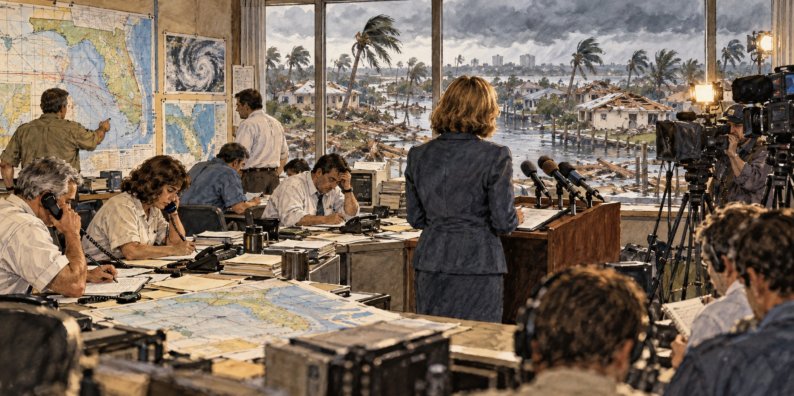

The Birth of Florida Emergency Management
How a Single Question, Asked on National Television, Rebuilt a State’s Entire Approach to Disaster

Before Hurricane Andrew, Kate Hale could shop for groceries in peace. She was, in her own words, just another Dade County bureaucrat running a small county division most Floridians had never heard of. Three days after Andrew made landfall, a stranger stopped her at a Winn-Dixie, hugged her and said, “You’re the one from the hurricane! You told ’em!” What she had told them, on national television, was: “Where in the hell is the cavalry on this one? They keep saying we’re going to get supplies. For God’s sake, where are they?”
A Law Written for a Different War
Florida’s emergency management history begins not with hurricanes but with the anxieties of the Second World War. The Florida Civil Defense Council Act of 1941 let the Governor establish a State Defense Council, with the Governor as chairman, to coordinate local, state and federal civil defense. A 1951 act directed every county to create its own civil defense council with an appointed director. The basic architecture, state coordination paired with strong county authority, was set early and has persisted for more than seven decades.
From Civil Defense to Centralized State Authority
In 1969, civil defense functions moved into the new Department of Community Affairs as the Division of Emergency Government. Revisions to Chapter 252 between 1974 and 1979 strengthened the state’s all-hazards framework and defined county disaster-preparedness responsibilities. In 1984 the modern Florida Division of Emergency Management was created from a bureau within the Division of Public Safety Planning and Assistance, in part modeled on the 1979 federal consolidation that created FEMA.
Three Days of Waiting
Kate Hale came to Miami from Flint, Michigan, worked her way through Florida International University, and ran Dade County’s small emergency management division for six years before Andrew. Colleagues described her as a meticulous organizer. During Andrew she coordinated dozens of county, state and federal agencies, along with the Red Cross, the Salvation Army and the National Guard, from the county’s Emergency Operations Center.
Homestead’s city manager complained within hours that county officials did not understand the extent of the devastation. By the third day, with water, ice and supplies still not reaching hundreds of thousands of homeless residents, Hale called a televised press conference and demanded an answer. President George H.W. Bush responded within hours that “help is on the way,” and mobile kitchens, tents and soldiers of the 82nd Airborne Division soon began arriving.
The Committee That Listened
Governor Lawton Chiles formed the Governor’s Disaster Planning and Response Review Committee, known as the Lewis Committee. It met eight times between October and December 1992, heard testimony from dozens of people, and took written submissions from more than a hundred individuals and organizations. Its final report on January 15, 1993 made ninety-four recommendations covering evacuation planning, the state’s Comprehensive Emergency Management Plan, and rules for local government emergency plans.
No Single Agency Can Do This Alone
The committee’s central finding was that no agency acting alone could manage a catastrophe on Andrew’s scale. Florida built a model that drew the private sector, nonprofits and faith-based groups into planning and response alongside government. Jeb Bush later told a congressional committee, “Florida learned a hard lesson about response and recovery after Andrew. That catastrophic storm was a wake-up call for all Floridians.”
In 1994 the State Emergency Response Team, known as SERT, became operational, training every state agency to work together in an emergency. The state’s Emergency Operations Center was completed in 1996. Florida’s emergency management program later earned accreditation from the Emergency Management Accreditation Program.
What Happened to the Woman Who Asked
Hale became a public figure almost overnight, appearing on national television. Pinellas County’s emergency director, David Bilodeau, said, “I can find no fault in her performance.” When Hurricane Charley struck in 2004, federal supplies and personnel were positioned before landfall, and Hale was among those who noted the improvement. The cavalry no longer had to be asked twice.
Quick Facts
| First state law | Florida Civil Defense Council Act, 1941 |
|---|---|
| 1951 | Every county required to create a civil defense council |
| 1974 | Florida revised its emergency-management framework during the 1970s |
| 1984 | Division of Emergency Management formally created |
| The question | Kate Hale, three days after Andrew’s August 24, 1992 landfall |
| Reform body | Governor’s Disaster Planning and Response Review Committee (Lewis Committee) |
| Report | January 15, 1993; 94 recommendations |
| Milestones | SERT operational 1994; State EOC completed 1996 |
Did You Know?
Kate Hale’s televised question helped move federal help to Homestead within hours.
The Lewis Committee made ninety-four recommendations in about three months.
Florida’s emergency system began with a 1941 civil defense law.
Vocabulary
Civil defense: the organizing of civilians to prepare for and respond to attack or disaster.
Emergency Operations Center: a facility where agencies coordinate during a disaster.
Accreditation: formal outside certification that an organization meets set standards.
Discussion Questions
Why did a single televised question move the federal response so quickly?
How does the 1951 county-based design still shape Florida’s system?
Related Articles
FLH-0013 — Why FEMA Was Created
FLH-0007 — Hurricane Andrew (1992)
FLH-0015 — Inside Florida’s Emergency Operations Centers
FLH-0008 — Hurricane Charley (2004)
Sources
Florida Division of Emergency Management. “History” and “About FDEM.” floridadisaster.org
Wikipedia. “Florida Division of Emergency Management.”
Liquisearch. “Florida Division of Emergency Management / History.”
Natural Hazards Center, University of Colorado Boulder. “A Case Study of Florida’s Emergency Management Since Hurricane Andrew.” hazards.colorado.edu
Risk and Resilience Hub / strategy+business. “When There Is No Cavalry.” riskandresiliencehub.com
Tampa Bay Times (archive). “She Made a Stand in Eye of the Storm.” tampabay.com
Government Executive. “Andrew vs. Charley.” govexec.com
Fire Engineering. “The Evolution of Federal Emergency Response Since Hurricane Andrew.” fireengineering.com
ABC News. “Hurricane Andrew 25 Years Later.” abcnews.com